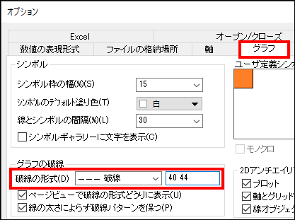

FAQ-818 なぜ、線+シンボルグラフで破線を使えないのでしょうか？
Dashed_lines_drawn_incorrectly_line_symbol_plot
最終更新日：2023/9/10
お客様から、線＋シンボルで作図した際、線のスタイル を 破線 に設定した時に、破線にならず、直線になってしまう報告を頂きました。シンボルサイズを0にして解決を試みますが、これでは問題を解決できません。
一般的に、この問題は次の要因が重なって生じています。
- プロットしたポイントが密集している。
- 破線の幅が太い (1.5 以上)。
- 線 + シンボルプロットが必要な場合、環境設定：オプションメニューを選択します。オプションダイアログで、グラフタブを有効にします。グラフの破線グループで、破線の形式ドロップダウンで破線タイプを選択し、編集ボックスに "40 44"のような大きい値を入力します。
- 
- 線の太さを細めに設定します。
- シンボルサイズを0 に設定している場合は、線＋シンボルのプロットが本来必要なのかを確認してください。もし、単純な折れ線で良ければ、作図形式 を 折れ線 （作図の詳細のダイアログの左下）折れ線として破線を描くことで、線の太さに関係なくこの問題は解決します。
- 以前は、折れ線ではドロップラインが利用出来なかったので、線＋シンボルを選択する時がありましたが（9.1より前のバージョン）、シンボルサイズ を 0 にはしないでください。代わりに、この FAQ にあるインストラクションに従って、線＋シンボルのプロットからシンボルを取り外すください。
キーワード:破線、線＋シンボル、シンボル、線のスタイル、シンボルとの距離